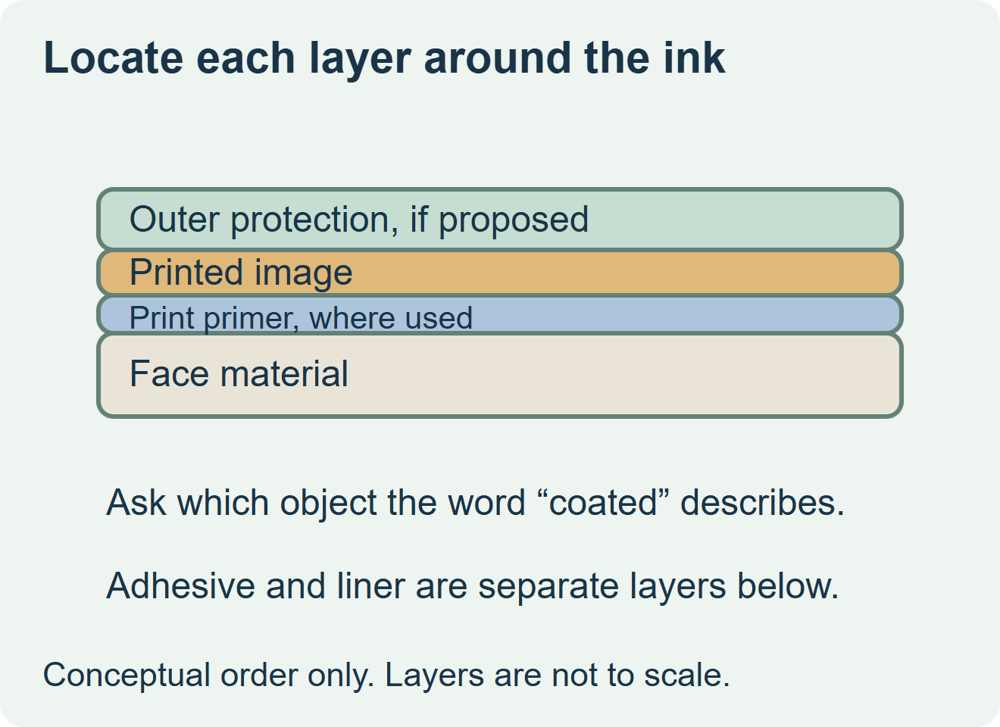
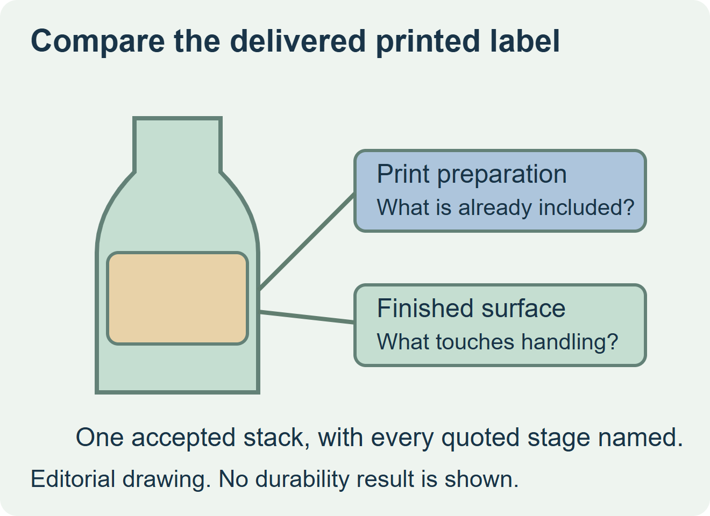

Ask which side of the ink the quoted coating occupies. A print-receptive primer prepares a particular material for an identified printing route; an overprint varnish is a different part of the finished stack. If the quote identifies only primed stock, leave the requested surface-protection requirement open until the converter states how it is addressed.


Draw the stack before comparing the coated-label price
Terms such as coated film, topcoat and treated stock can describe different supplied objects. Ask the converter to show the substrate, print-preparation layer where used, ink and proposed outer finish in order. The primer might be supplied with the media or applied during conversion. A separate finish might be added later. Names alone do not reveal those boundaries.
Michelman’s digital-printing overview distinguishes primers that improve print quality and ink adhesion from overprint varnishes that protect and enhance printed materials. Its product families illustrate separate roles in a print system. They do not establish that any named primer or varnish is supplied by ZFU, approved for this food package, or interchangeable across presses.
| Quoted item | Ask what is actually included | What remains a separate question |
|---|---|---|
| Print-ready or primed face material | Media reference, supported print route and preparation already supplied | The ink and any final protective layer. |
| Primer applied by the converter | Identified preparation stage and whether its cost is in the offer | The complete finished print/protection proposal and its evidence. |
| Protective overprint varnish | Actual varnish, coverage and compatibility with the printed construction | Container adhesion, exposed edges and unrepresented use conditions. |
| Film laminate instead of varnish | The proposed laminate and complete delivered stack | Whether it meets the same appearance, later coding and handling requirement. |


Use the intended handling to decide what needs protection
A dry gift-food label and a refrigerated bottle handled while wet do not present the same surface job. State the actual exposure instead of asking for a generic waterproof coating. Identify rubbing against dividers, wiping or a relevant spill separately. The converter should propose a compatible system and representative sample; this guide does not prescribe a coating weight, cure setting or universal resistance result.
For a hypothetical chilled sauce launch, quote A identifies a digitally printable primed film. Quote B identifies the printed film plus an outer varnish. Before describing B as more expensive for the same label, ask A whether its delivered print has the protection the brief requests. Conversely, do not add another primer charge to B if the confirmed media already includes the supported preparation. Compare the actual included work.
Approve a finished sample and keep the boundaries visible
The relevant sample contains the proposed media, ink and outer finish, including deliberately uncoated or later-code areas. Retain its identity and compare it under the agreed handling. A primed blank strip can support a media discussion without representing the printed surface. A coated print on another substrate leaves a different evidence gap.
Request a revised common-scope quote when the layer or operation is unclear. Keep material preparation, printing, protection, sampling and any repeat setup identifiable without demanding confidential formulation details. If the order changes press, media or finish, ask which part of the prior evidence still applies. The useful purchasing result is a supported finished construction with an understandable price, not an assumption that one coating name covers every job.
Discuss the unresolved label requirement
Send package, print route if known, face/media reference, coated/primed quote wording, intended rubbing or wet exposure, later-code zones and quantities. Review food label options and prepare a label specification inquiry. The contact page opens an email draft and lists email or WhatsApp for attachments. Supply, proof options, testing, pricing and timing require project confirmation.